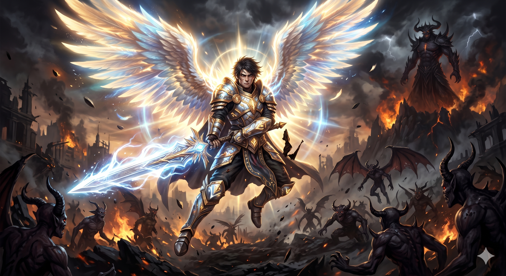
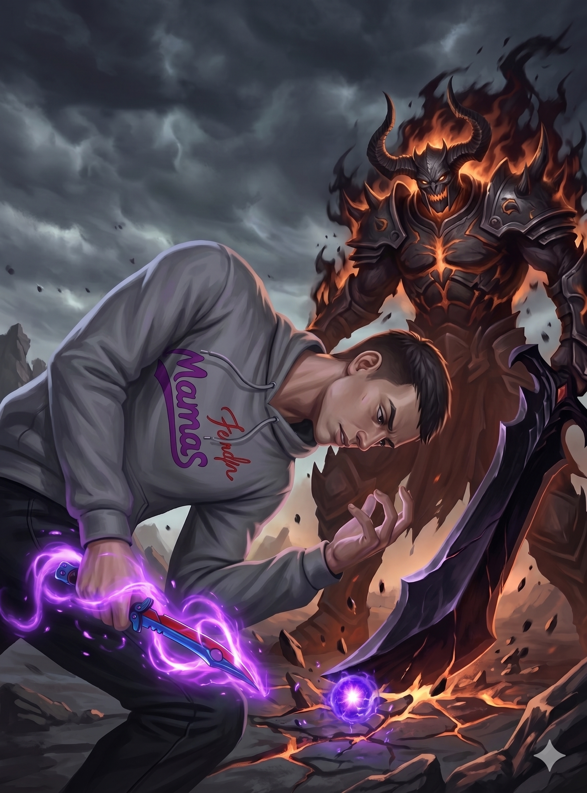

Félix nasceu em uma terra distante, isolada das grandes cidades e do resto do mundo. Desde cedo, ele possuía uma magia muito forte, com poderes imensos que não conseguia controlar. Acidentes aconteciam, coisas saíam do controle, até que, com muito esforço, ele despertou seu verdadeiro poder. Félix alcançou a glória que tanto desejava, mas, por dentro, sentia que algo faltava. A glória não trouxe a felicidade que ele esperava; a tristeza ainda o acompanhava.
Foi então que o impensável aconteceu. Uma infestação demoníaca devastou sua cidade natal. Criaturas invadiram por todos os lados, sem deixar rota de fuga. A destruição foi total e muitas vidas se perderam. Félix foi o único a sobreviver, usando suas habilidades especiais para resistir ao massacre.
Em meio ao caos, o Rei Demônio surgiu, travando uma guerra intensa. A batalha destruiu tudo ao redor, e embora Félix tenha sobrevivido, ele percebeu uma dura verdade: ele era fraco demais. Seus ataques mais fortes não causaram sequer um arranhão no Rei Demônio.
Diante da diferença esmagadora de poder, o Rei Demônio fez uma proposta inesperada. Ele convidou Félix para se aliar a ele, formando uma dupla imbatível que governaria tudo. Mas Félix recusou. Ele sabia que aquilo era errado, que seu planeta estava morrendo e que ele precisava lutar pelo que era certo.
A batalha que se seguiu durou muitos e muitos anos. No fim, exaurido, Félix caiu em combate e perdeu a vida. Porém, a morte não foi o seu fim. Observando sua coragem inabalável, o Deus de sua terra o reviveu. Félix retornou não mais como um mortal, mas como um dos anjos mais poderosos que já existiram. O Deus sabia do seu imenso potencial e lhe deu uma nova missão: aniquilar o Rei Demônio e todos os seus servos.
